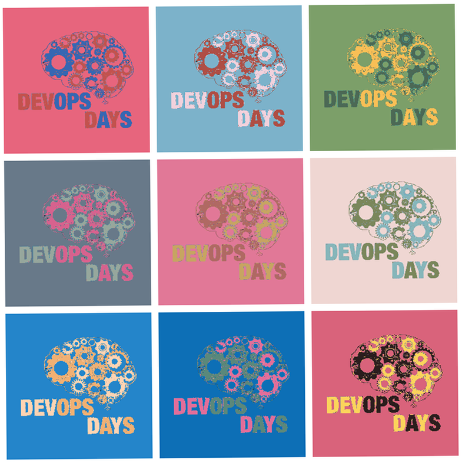

Pittsburgh 2015 - welcome
Steel sponsors
devopsdays Pittsburgh n'at!
was Thursday and Friday, August 13 & 14, 2015 at University of Pittsburgh.
2015 was a great success!
We were proud to put on this program.
Videos of all of the devopsdays Pittsburgh 2015 talks, including ignites, are available on the devopsdays Pittsburgh YouTube channel. The audio from these talks is on the devopsdays Podcast.
Too cool for moving pictures? We've got our still pictures shared here.
You can check out more on devopdays Pittsburgh on Lanyrd.
Nice things people said about devopsdays Pittsburgh 2015 a.k.a. #dodpgh15
"Open Spaces are the best idea I've never see anywhere else. Keep doing what you're doing. This was awesome and I can't wait for next year!" - Anonymous
"Right number of talks, right length of talks, ignite talks on both days, good environment, food, etc. Organizers were very friendly and approachable. I personally felt a real sense of community." - J.D.
Great job organizers and participants.
— .json (@jasonhand) August 14, 2015
Lots of great talks and open space discussions! #DevopsDays #dodpgh15 https://t.co/MEijGny5oR
Conference complete! Thanks to all the attendees of #dodpgh15 for helping to craft such a great event! @devopsdayspgh
— Tim Parenti (@timparenti) August 14, 2015
Thank you for a wonderful 2015 conference @devopsdayspgh #dodpgh2015 #devopsdays
— Nicholas Kiraly (@NicholasKiraly) August 14, 2015
Great 2 days at Devops Days Pittsburgh.
— Mike Nescot (@mnescot) August 14, 2015
Regarding our novel "no provided WiFi" policy
"I think it's great that you take this stance on wifi. I think it keeps more attendees focused and talking to one another. Keep up the good work." - Anonymous
"I actually liked the fact that i was forced to stay offline. It kept me from continuously checking in on work and allowed me to participate more." - Anonymous
"I like being able to disconnect and pay attention." - J.L.
"Lack of abundant internet access forced us to actually communicate in meat-space and IMO resulted in a better overall conference. If internet access was 100% required it was available but the barrier of inconvenience forced us to only use it when necessary. Most of us have LTE anyway so meh." - J.D.
"It was great not having Wi-Fi. I never opened my laptop once, and I actually spoke to people in real life. More conferences should do this." - P.G.
Nice things people have said about devopsdays Pittsburgh prior to 2015
"I had a lot of fun at DevOps Days Pittsburgh in 2014. I met dozens of passionate, experienced people interested in changing the culture of development an operations. I even hired two of them!" - Casey West
"Devopsdays Pittsburgh 2014, on paper, shouldn't have worked. The stew of people from different backgrounds -- sysadmins, front-end and back-end developers, database administrator, project manager, QA engineer, consultants -- how could these people all get along? But we did, we really really did. The talks were honest and direct, and the open spaces harnessed the chaos of disparate backgrounds into memorable discussions that still resonate over a year later. Recommended if you have anything to do with making or using software." - Chris Winters
Jake Champlin shares his formative experience at devopsdays Pittsburgh 2014:
Casey West and Marylou Lenhart have a short conversation about their experience at devopsdays Pittsburgh 2014:

We have a code of conduct.


Aluminum sponsors

Glass sponsors


Media sponsors


Host sponsor